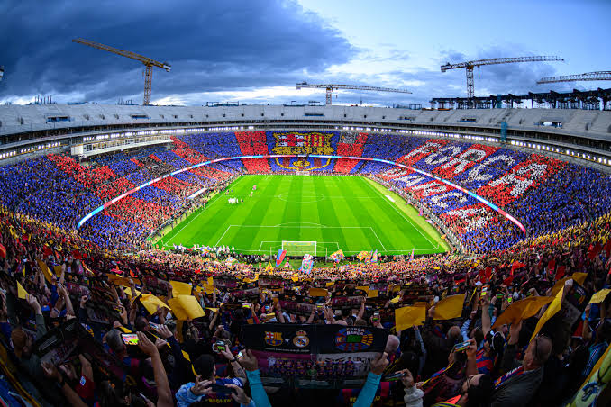

01
Prva Momčad
Prva nogometna momčad natječe se u natjecanjima La Liga, Copa del Rey i UEFA Ligi prvaka.
Službena fan stranica posvećena FC Barceloni. Pratite prvu momčad, najnovije vijesti i mlade talente iz akademije La Masia.

Saznajte više o strukturi i kategorijama FC Barcelone
Prva nogometna momčad natječe se u natjecanjima La Liga, Copa del Rey i UEFA Ligi prvaka.
Svjetski poznata akademija iz koje dolaze najveći nogometni talenti i buduće zvijezde kluba.
Spotify Camp Nou je dom Barcelone još od 1957. godine s bogatom tradicijom i trofejima.